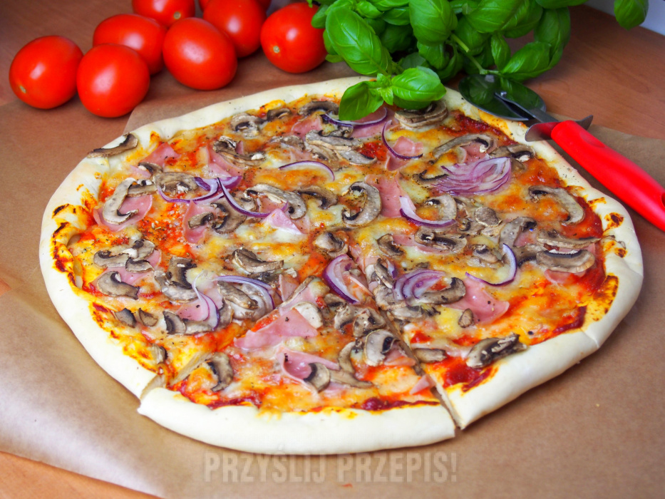

Menu
Pizza

Opis
Przepis na pizze szybki do zrobienia na spotkanie ze znajomymi lub dla siebie
Ciasto składniki:
- 1,5 szklanki mąki
- 1/2 szklanki mleka
- 25g świeżych drożdży
- 1/2 łyżeczki soli
- 1/2 łyżeczki cukru
- 2 łyżki oleju
Dodatki składniki:
- 3 łyżki koncentratu pomidorowego
-
- 150g mozzareli tartej
- 100g szynki
- 5 dużych pieczarek
- pieprz, bazylia, oregano, czosnek granulowany
Kroki
- Drożdże rozpuszczamy w ciepłym mleku, łączymy z mąką, cukrem, solą i olejem. Wyrabiamy gładkie ciasto. Rozwałkowujemy na kształt koła, zaginamy do środka brzegi.
- Placek smarujemy koncentratem, posypujemy przyprawami. Układamy kolejno: starty ser mozzarella, pokrojone: szynkę, pieczarki i cebulę.
- Pieczemy w temperaturze 210 stopni przez 15-20 minut, aż brzegi się zarumienią.